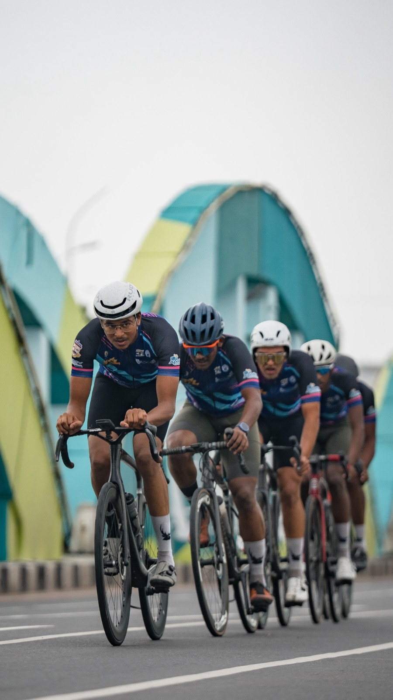

InternationalJan 2026
Track Asia Cup brings 11 nations to Vandalur
Tamil Nadu hosted its first UCI international event. Hashini K took silver in the junior scratch race, Pranesh S bronze in the team sprint and the men's elite squad bronze in the team pursuit.
Read the story